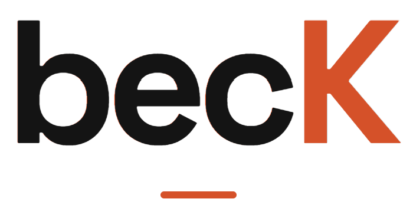

- HTML5
- CSS3
- JavaScript (ES6+)
Front-end developer · Computer Engineering student
Hi, I’m Asilbek.
I build accessible, responsive websites with clean code and careful detail.
BECK is my personal brand and portfolio — a home for the projects I design, code and ship while studying web programming.

Asilbek · Web developer- 100Lighthouse accessibility score
- 9Weeks of documented course work
- 6Browser APIs in one playground
- 1Live team product — Overlap
01 /
About
Curiosity into craft.
I’m Asilbek, a Computer Engineering student learning front-end development through real, hands-on projects — from weekly course exercises to a campus community app used by other students.
I care about the details people feel but rarely notice: semantic structure, keyboard access, readable contrast, fast loading, and layouts that hold up on any screen.
How I work
- Structure first. Semantic HTML and clear landmarks.
- Design for everyone. WCAG contrast, focus states, skip links.
- Measure it. Lighthouse audits before and after.
- Ship it. Version control and live deploys on GitHub Pages.
02 /
Skills
Tools for the web.
Tap a card to see where I used each skill.
- Responsive design
- Accessibility (WCAG)
- Performance
- Form validation
- Fetch
- Web Storage
- Geolocation
- Canvas
- Git & GitHub
- Version control
- GitHub Pages
- Lighthouse
- DevTools
03 /
Selected work
Things I’ve made.
01 · Team project · Campus community
Overlap
A campus introduction app that helps students find common ground and meet people with shared interests.
- Team project
- Product
- Live
02 · Accessibility
Lighthouse accessibility audit
Improved colour contrast and keyboard navigation on my course homepage, reaching a 100/100 Lighthouse accessibility score.
HTML · CSS · Lighthouse
03 · Interactive demos
Browser API playground
A hands-on set of six browser API examples, including Fetch, local storage, geolocation and Canvas.
HTML · CSS · JavaScript
04 · API app
Book Finder
A book search app that fetches results from a public API, with loading and error states.
JavaScript · Fetch API
04 / Contact
Let’s build something.
I’m always open to feedback, collaboration and new projects. The best way to reach me is on GitHub.